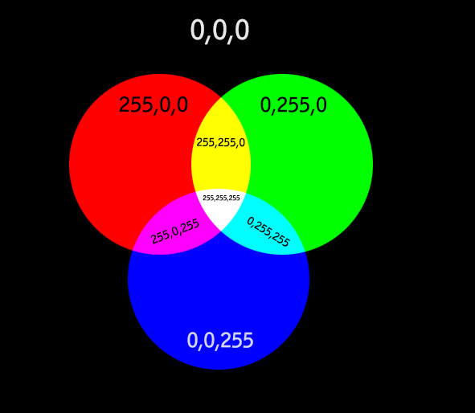

In een computer worden ook kleuren gecodeerd. De camera van je telefoon heeft een aantal lenzen. Achter deze lenzen zit een CCD, dit is een beeldsensor. Deze beeldsensor heeft heel veel lichtgevoelige fotocellen. Wanneer je een foto maakt dan wordt er een momentopname gemaakt van het invallende licht. De sensoren zetten dit dan weer om in een elektrisch signaal.
Wanneer je een foto maakt van een scherm is het een beetje wazig. Als je dan ver inzoomt op de foto zie je allemaal vakjes / puntjes. Dit zijn pixels. Hoe meer van deze pixels en scherm heeft hoe gedetailleerder en scherper het beeld is. Dit noem je resolutie, het is dus de scherpte en details van een digitaal beeldscherm afhankelijk van het aantal pixles. Als je nog verder in die foto zou kunnen inzoomen zie je rode, groene en blauwe lampjes. Elk pixel bestaat uit deze drie lampjes. Door die lampjes zachter en harder te laten branden kunnen er verschillende kleuren worden gemaakt en weergegeven. Het werk eigenlijk hetzelfde als verf meningen. Een kleurmodel mengt ook kleuren om de gewenste kleur op het scherm weer te geven. De kleuren rood, groen en blauw zijn ook de basis van alle andere kleuren, daarom is het RGB-model ook op deze kleuren gebaseerd.
Toch ontstaan er andere kleuren met mengen bij het RGB-model dan bij het mengen van verf. Hieronder zie je een tabel die dit goed vergeeft.

De basis van het RGB-model is zwart, wanneer de pixels niet branden is je beeldscherm zwart en staat die uit. Als je kleuren aan deze achtergrond toevoegt, ontstaan er nieuwe kleuren. Wanneer je alle kleuren gebruikt krijg je wit. Een computer werkt niet met procenten, alleen maar met hele getallen. De hoeveelheid rood, groen en blauw wordt daarom aangegeven met een decimaal getal van 0 - 255. Dit is een byte. De kleur paars wordt zo genoteerd: paars = (255, 0, 255). Een computer zet deze getallen dan weer om naar binair en zo wordt het beeldscherm dan aangestuurd.
Als je vanaf je computer een foto wil uitprinten, dan wordt er een ander model gebruikt dan als je een foto wilt weergeven op een beeldscherm. Hier wordt een ander model gebruikt, omdat met het RGB-model voeg je kleuren toe aan een zwarte basis, maar als je iets uitprint, doe je dat op wit papier. Hiervoor wordt het CMY-model gebruikt. Bij deze methode worden de kleuren cyaan, magenta en geel gebruikt en worden deze kleuren aan een witte basis toegevoegd.
Als je alle drie de kleuren mengt, krijg je geen zwart maar donker grijs. Als je dit met een printer zou afdrukken zou op de plek waar zwart moet komen het papier heel nat van de inkt. Maar soms heb je toch de kleur zwart nodig als je iets uitprint, daarom wordt zwart toegevoegd aan dit kleurmodel. Dan krijg je het CMYK-model, de ‘K’ staat voor key of voor black.